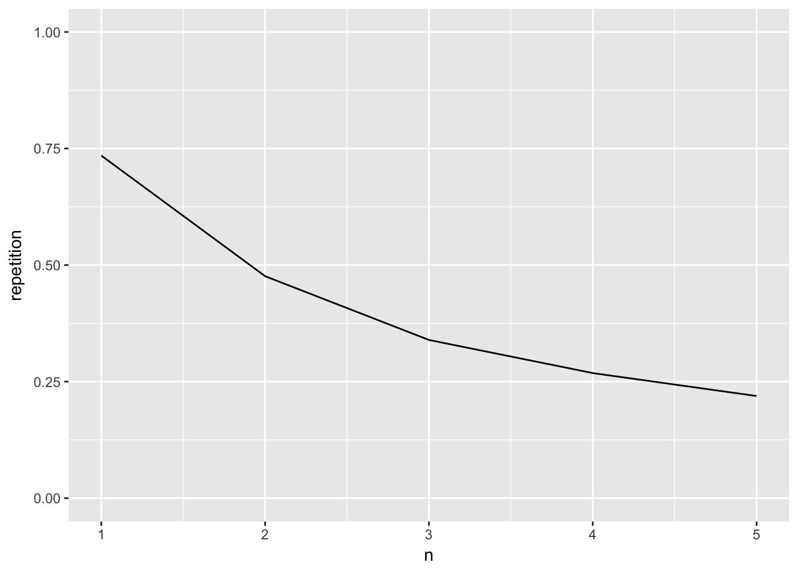
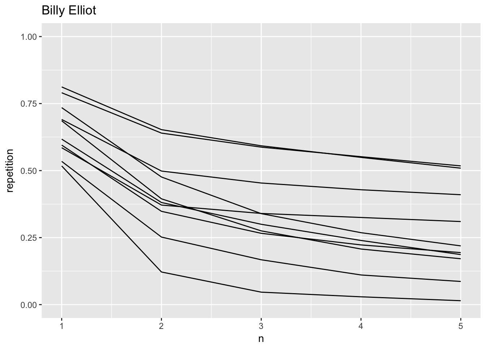
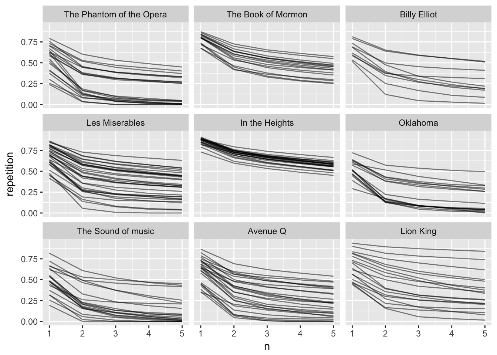
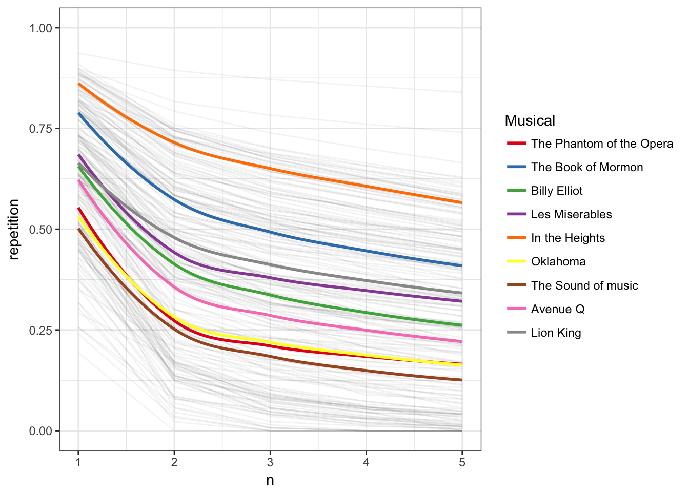

Lately I have been wondering how to quantify how repetitive a text is, specifically how repetitive are the lyrics to songs. I’m by no means the first one, Colin Morris did a great piece on language compression with his Are Pop Lyrics Getting More Repetitive? which i highly recommend you go read. Instead of looking at pop lyrics will we instead be focusing some popular musicals to see if general patterns emerge within each show.
My plan is to use the magic of the tidyverse with the inclusion of tidytext to find the percentage of repeated consecutive sequences of words() also called n-grams) of varying length and then compare the results. Due to the small size of data required for this initial analysis, readLines and stringr will be used to extract and reformat song lyrics. However for larger data needs official APIs are recommended.
Extracting song lyrics
library(tidyverse)## Warning: Installed Rcpp (0.12.12) different from Rcpp used to build dplyr (0.12.11).
## Please reinstall dplyr to avoid random crashes or undefined behavior.## Loading tidyverse: ggplot2
## Loading tidyverse: tibble
## Loading tidyverse: tidyr
## Loading tidyverse: readr
## Loading tidyverse: purrr
## Loading tidyverse: dplyr## Warning: package 'dplyr' was built under R version 3.4.1## Conflicts with tidy packages ----------------------------------------------## filter(): dplyr, stats
## lag(): dplyr, statslibrary(tidytext)
library(stringr)We will first take a peek at a specific song,
the_stars_look_down <- readLines("https://genius.com/Elton-john-the-stars-look-down-lyrics")
head(the_stars_look_down, 20)## [1] ""
## [2] ""
## [3] "<!DOCTYPE html>"
## [4] "<html class=\"snarly bagon_song_page--enabled gastly--disabled\" xmlns=\"http://www.w3.org/1999/xhtml\" xmlns:fb=\"http://www.facebook.com/2008/fbml\" lang=\"en\" xml:lang=\"en\">"
## [5] " <head>"
## [6] " <base target='_top' href=\"//genius.com/\">"
## [7] ""
## [8] " <script type=\"text/javascript\">"
## [9] "//<![CDATA["
## [10] "var _sf_startpt=(new Date()).getTime();"
## [11] "//]]>"
## [12] "</script>"
## [13] "<title>Elton John – The Stars Look Down Lyrics | Genius Lyrics</title>"
## [14] ""
## [15] "<meta http-equiv=\"Content-Type\" content=\"text/html; charset=utf-8\" />"
## [16] "<meta content='width=device-width,initial-scale=1' name='viewport'>"
## [17] "<link rel='chrome-webstore-item' href='https://chrome.google.com/webstore/detail/ccaokncpmmjiakalbcfdbfmpcaiddjdn'>"
## [18] "<meta name=\"apple-itunes-app\" content=\"app-id=709482991\">"
## [19] "<link href=\"https://assets.genius.com/images/apple-touch-icon.png?1500478096\" rel=\"apple-touch-icon-precomposed\" />"
## [20] ""And we find a whole of lines of no interest of us, which is to be expected. After some digging I manage to find that the lyrics are packed between sse tags
the_stars_look_down[361:371]## [1] " <div class=\"column_layout-column_span column_layout-column_span--primary\">"
## [2] " <div class=\"song_body-lyrics\">"
## [3] " "
## [4] " <h2 class=\"text_label text_label--gray u-top_margin\">The Stars Look Down Lyrics</h2>"
## [5] " "
## [6] " <div initial-content-for=\"lyrics\">"
## [7] " <div class=\"lyrics\">"
## [8] " "
## [9] " <!--sse-->"
## [10] " <p>Through the dark, and<br>"
## [11] "Through the hunger<br>"so we can slice the data by indication of those tags, furthermore we would like to remove any and all tags present in the text, this can be done using strinr’s str_replace_all function and some fancy regular expressions. Leaving us with the following
start <- " *<!--sse-->"
end <- " *<!--/sse-->"
tibble(text = the_stars_look_down) %>%
slice(which(str_detect(text, start)):which(str_detect(text, end))) %>%
mutate(text = str_replace_all(text, "<([^;]*)>", ""))## # A tibble: 109 x 1
## text
## <chr>
## 1
## 2
## 3 Through the hunger
## 4 Through the night and
## 5 Through the fear
## 6 Through the fight and
## 7 Years of hardship
## 8 Through the storms and
## 9 Through the tears
## 10 And although your feet are weary
## # ... with 99 more rowsWe notice some of the rows turn up empty so those are quickly dealt with by a filter. Now we employ our tidytext arsenal with unnest_tokens and we find all the bi-grams (pairs of consecutive words). (notice how they overlap)
tibble(text = the_stars_look_down) %>%
slice(which(str_detect(text, start)):which(str_detect(text, end))) %>%
mutate(text = str_replace_all(text, "<([^;]*)>", "")) %>%
unnest_tokens(bigram, text, token = "ngrams", n = 2)## # A tibble: 546 x 1
## bigram
## <chr>
## 1 through the
## 2 the hunger
## 3 hunger through
## 4 through the
## 5 the night
## 6 night and
## 7 and through
## 8 through the
## 9 the fear
## 10 fear through
## # ... with 536 more rowsnow from this we can summarize to find the number of unique bigrams and by extension the percentage of repeated bigrams.
tibble(text = the_stars_look_down) %>%
slice(which(str_detect(text, start)):which(str_detect(text, end))) %>%
mutate(text = str_replace_all(text, "<([^;]*)>", "")) %>%
unnest_tokens(bigram, text, token = "ngrams", n = 2) %>%
summarise(length = length(bigram),
unique = length(unique(bigram))) %>%
mutate(repetition = 1 - unique / length)## # A tibble: 1 x 3
## length unique repetition
## <int> <int> <dbl>
## 1 546 286 0.4761905So we see that in this particular song around 48% bigrams are present at least twice. We will expect this percentage to be strictly decreasing for \(n\) increasing, but what we are interested in the both the rate it is decreasing but also the general level.
Now we generalizing this procedure using some purrr to give us a nice data.frame out in the end. The range 1:5 was picked after some trial and error, and it seemed to me that most trends died out around the 5-6 mark rendering data points over rather uninteresting.
songfun <- function(hyperlink, repnum = 1:5) {
start <- " *<!--sse-->"
end <- " *<!--/sse-->"
tibble(n = repnum,
text = tibble(text = readLines(hyperlink)) %>%
slice(which(str_detect(text, start)):which(str_detect(text, end))) %>%
mutate(text = str_replace_all(text, "<([^;]*)>", "")) %>%
filter(text != "") %>%
mutate(line = row_number()) %>%
summarise(text = str_c(text, collapse = " ")) %>%
as.character()
) %>%
split(.$n) %>%
map2_df(.y = repnum, ~ .x %>%
unnest_tokens(bigram, text, token = "ngrams", n = .y) %>%
summarise(n = .y,
length = length(bigram),
unique = length(unique(bigram))) %>%
mutate(repetition = 1 - unique / length,
name = hyperlink))
}Now to try this out, we plug in the link again, and pipe the result into ggplot to give us a nice visualization
songfun("https://genius.com/Elton-john-the-stars-look-down-lyrics") %>%
ggplot(aes(n, repetition)) +
geom_line() +
coord_cartesian(ylim = 0:1)
from this plot alone we can see that roughly 3/4 of the words used in the song are used more then twice, while on the other end of the scale just shy of 25% of the 5-grams are used more then once. This plot by itself doesn’t provide too much meaningful information by itself. So next step is to gather information for more songs to compare.
This function takes a link to an album page, and uses similar techniques used earlier to detect the song in the album, find the lyrics with songfun, process it and spits out a data.frame.
albumfun <- function(hlink, ...) {
song_links <- tibble(text = readLines(hlink)) %>%
filter(str_detect(text, " <a href=\"https://genius.com/")) %>%
mutate(text = str_replace(text, "<a href=\"", "")) %>%
mutate(text = str_replace(text, "\" class=\"u-display_block\">", "")) %>%
mutate(text = str_replace(text, " *", "")) %>%
mutate(song = str_replace(text, "https://genius.com/", ""))
nsongs <- nrow(song_links)
out <- tibble()
for (i in 1:nsongs) {
ting <- songfun(song_links$text[i], ...)
out <- rbind(out, ting)
}
out %>%
mutate(album = hlink)
}Analysis
We use our function to get the data for a number of different musicals.
billyelliot <- albumfun(hlink = "https://genius.com/albums/Elton-john/Billy-elliot-the-musical-original-london-cast-recording")
thebookofmormon <- albumfun(hlink = "https://genius.com/albums/Book-of-mormon/The-book-of-mormon-original-broadway-recording")
lionking <- albumfun(hlink = "https://genius.com/albums/The-lion-king/The-lion-king-original-broadway-cast-recording")
avenueq <- albumfun(hlink = "https://genius.com/albums/Robert-lopez-and-jeff-marx/Avenue-q-original-broadway-cast-recording")
oklahoma <- albumfun(hlink = "https://genius.com/albums/Richard-rodgers/Oklahoma-original-motion-picture-soundtrack")
soundofmusic <- albumfun(hlink = "https://genius.com/albums/Richard-rodgers/The-sound-of-music-original-soundtrack-recording")
intheheights <- albumfun(hlink = "https://genius.com/albums/Lin-manuel-miranda/In-the-heights-original-broadway-cast-recording")
lemiserables <- albumfun(hlink = "https://genius.com/albums/Les-miserables-original-broadway-cast/Les-miserables-1987-original-broadway-cast")
phantomoftheopera <- albumfun(hlink = "https://genius.com/albums/Andrew-lloyd-webber/The-phantom-of-the-opera-original-london-cast-recording")and a quick explorative plot tells us that it is working as intended, we see some variation both slopes and offset, telling us that Billy Elliot have some range in its songs.
billyelliot %>%
ggplot(aes(n, repetition)) +
geom_line(aes(group = name)) +
labs(title = "Billy Elliot") +
coord_cartesian(ylim = 0:1)
to further compare we bind all the data.frames together for ease of handling
musical_names <- c("The Phantom of the Opera", "The Book of Mormon",
"Billy Elliot", "Les Miserables", "In the Heights",
"Oklahoma", "The Sound of music", "Avenue Q", "Lion King")
rbind(billyelliot, thebookofmormon, lionking, avenueq, oklahoma,
soundofmusic, intheheights, lemiserables, phantomoftheopera) %>%
mutate(album = factor(album, label = musical_names)) %>%
ggplot(aes(n, repetition)) +
geom_line(aes(group = name), alpha = 0.5) +
facet_wrap(~ album)
Wow, here we clearly see some differences in lyrical styles for the different musical, from the evenness of the soundtrack to “In the Heights” to the range of “Lion King”. To try having them all in the same graph would be overwhelming. However we could still plot the trend of each album in the same plot, fading out individual songs.
rbind(billyelliot, thebookofmormon, lionking, avenueq, oklahoma,
soundofmusic, intheheights, lemiserables, phantomoftheopera) %>%
ggplot(aes(n, repetition)) +
coord_cartesian(ylim = 0:1) +
geom_line(aes(group = name), alpha = 0.05) +
geom_smooth(aes(group = album, color = album), se = FALSE) +
theme_bw() +
scale_colour_brewer(palette = "Set1",
name = "Musical",
labels = c("The Phantom of the Opera", "The Book of Mormon",
"Billy Elliot", "Les Miserables",
"In the Heights", "Oklahoma",
"The Sound of music", "Avenue Q", "Lion King"))## `geom_smooth()` using method = 'loess'## Warning: Removed 20 rows containing non-finite values (stat_smooth).